Applied analysis · Information theory
LoLdle information
gain solver
An interactive Python solver that treats each guess as a way to reduce uncertainty, plus an automated dataset builder and a notebook exploring champion attributes.

01 / The question
Can a guess be chosen for the information it reveals?
LoLdle gives feedback about a hidden champion after each guess. This project turns that feedback loop into a decision problem, ranking guesses by how well they split the possible answers instead of relying on trial and error.
02 / The dataset
Champion attributes become clues.
A dataset builder retrieves champion information used by the game and prepares a current dataset. The analysis includes attributes such as gender, positions, species, region, resource type and release year.
03 / The workflow
Score the guesses, then use the feedback.
- 01Simulate outcomes
For each candidate guess, model the feedback patterns it could produce.
- 02Measure information
Calculate entropy across possible feedback patterns and the expected number of candidates left.
- 03Choose and narrow
Start with a high entropy guess, record the game's feedback, then filter the candidate set and rank the next choices.
- 04Explore the dataset
A Jupyter notebook and plots examine champion attributes and how candidate rankings behave.
04 / The visuals
Solver demo and analytical plots.
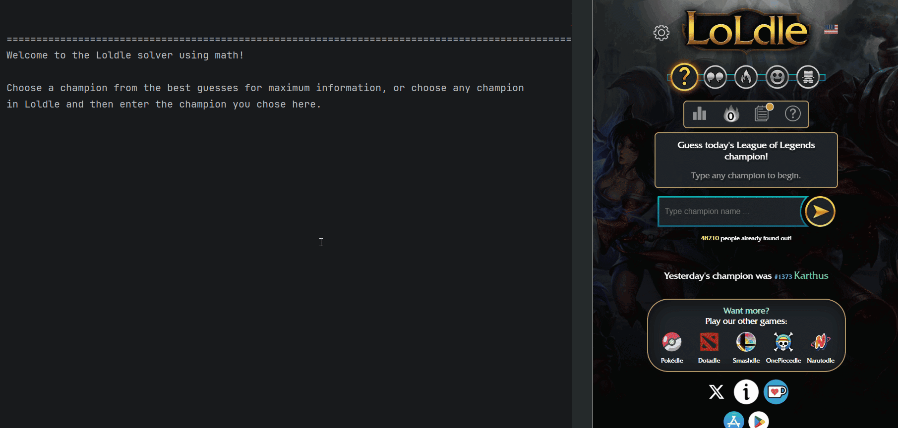
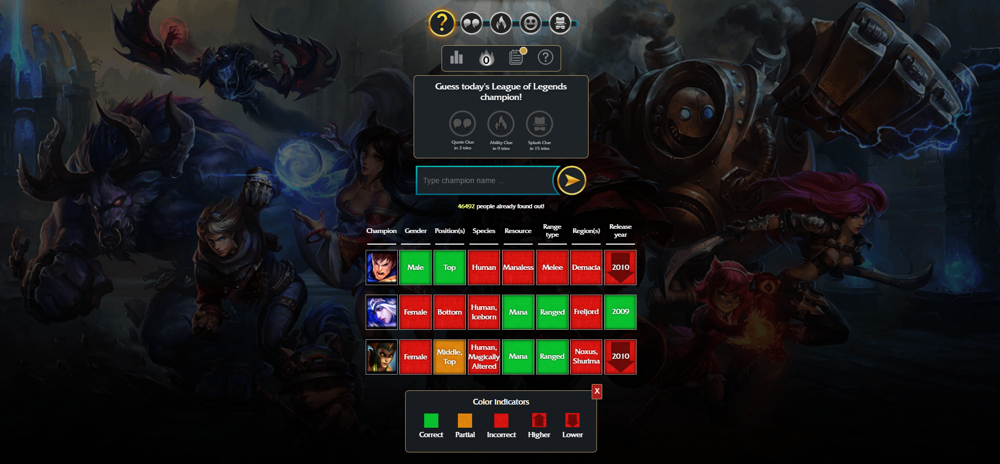
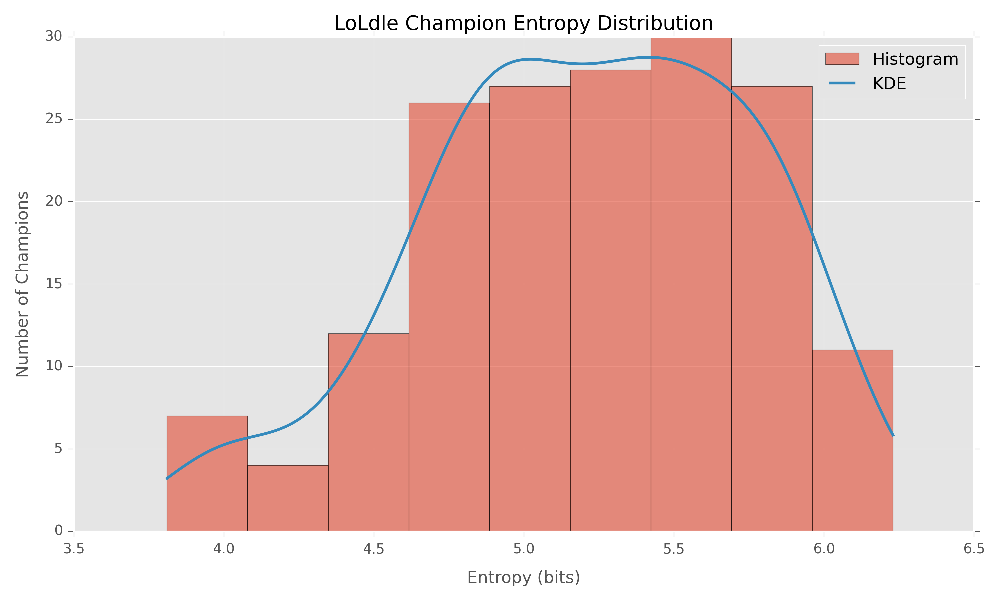
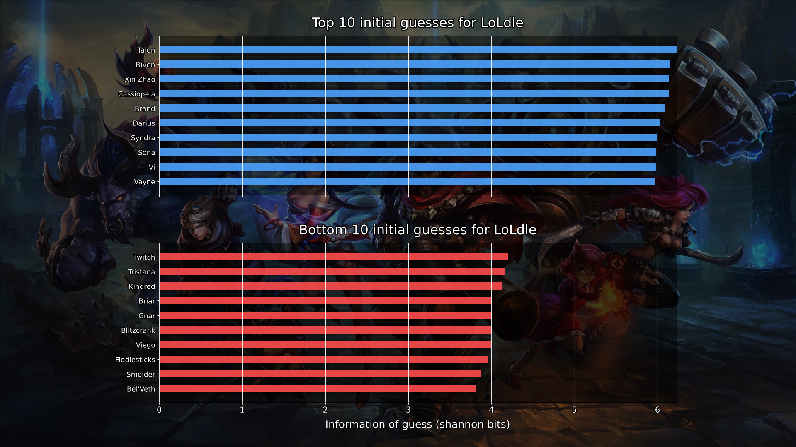
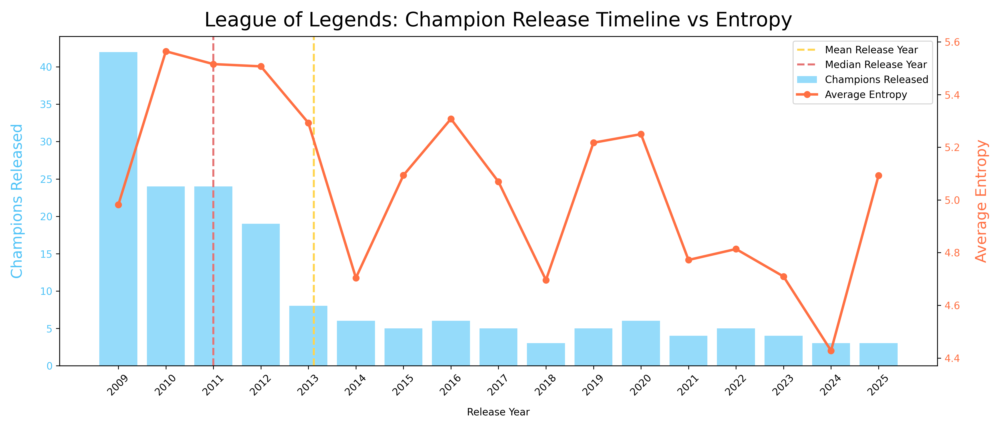
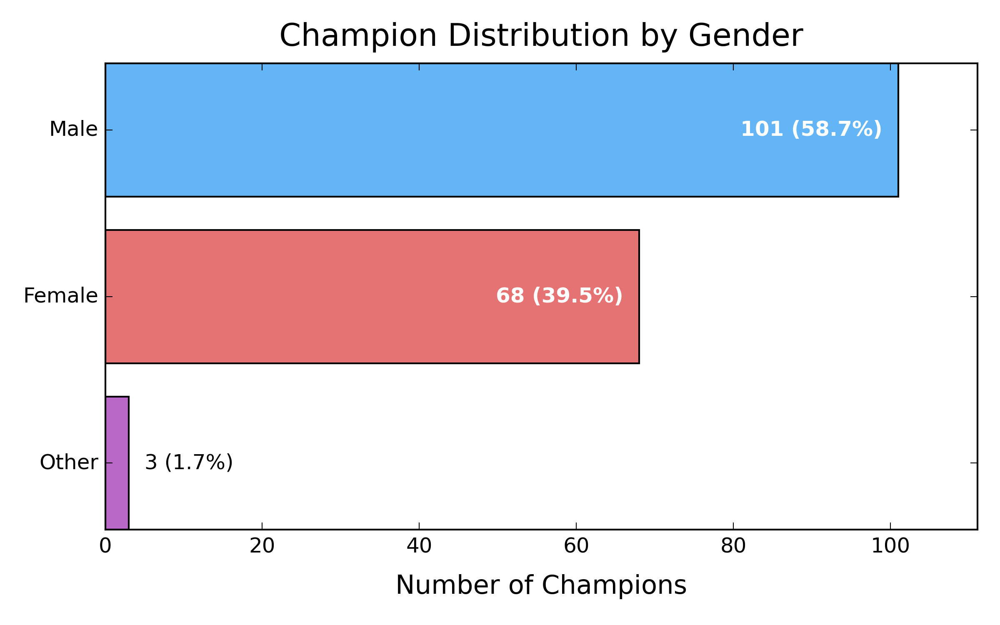
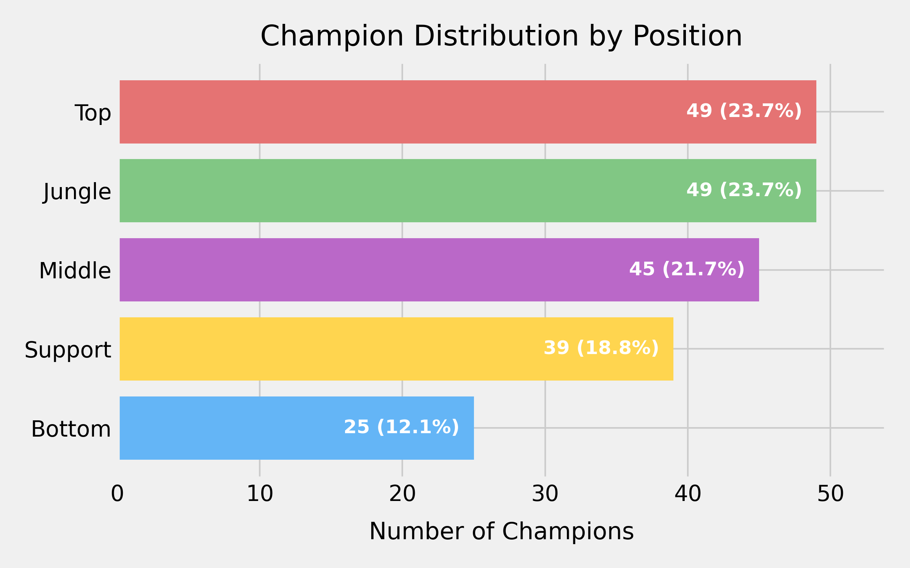
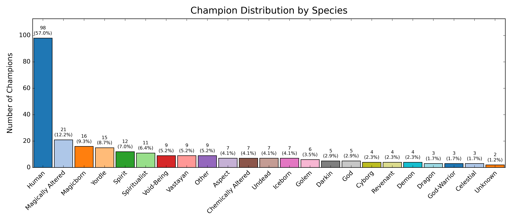
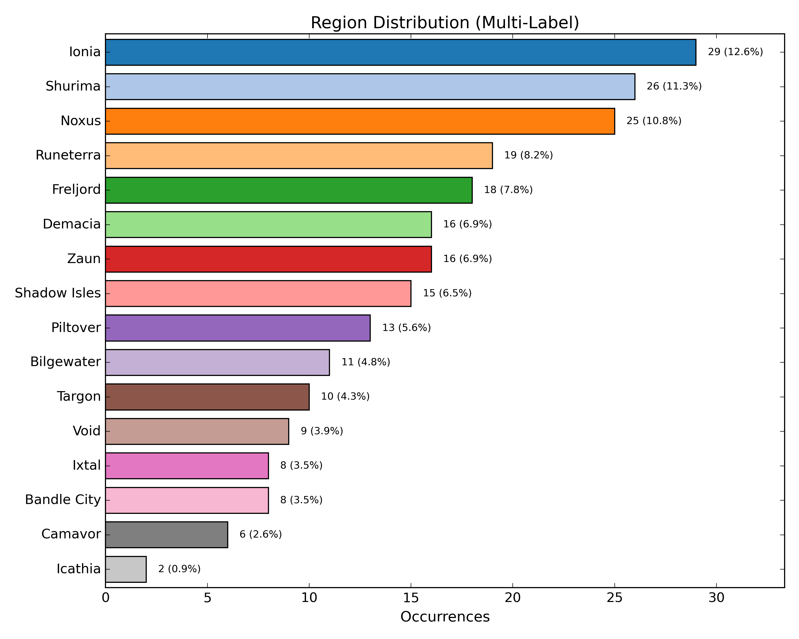
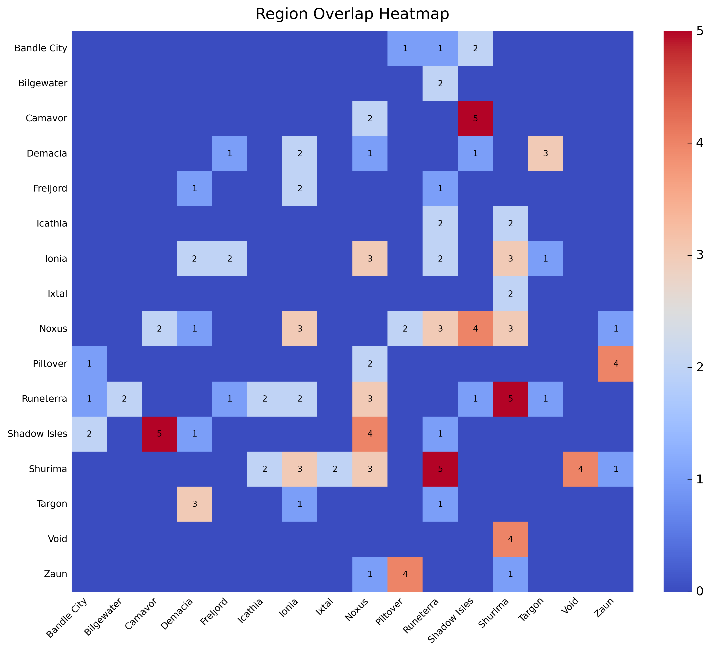
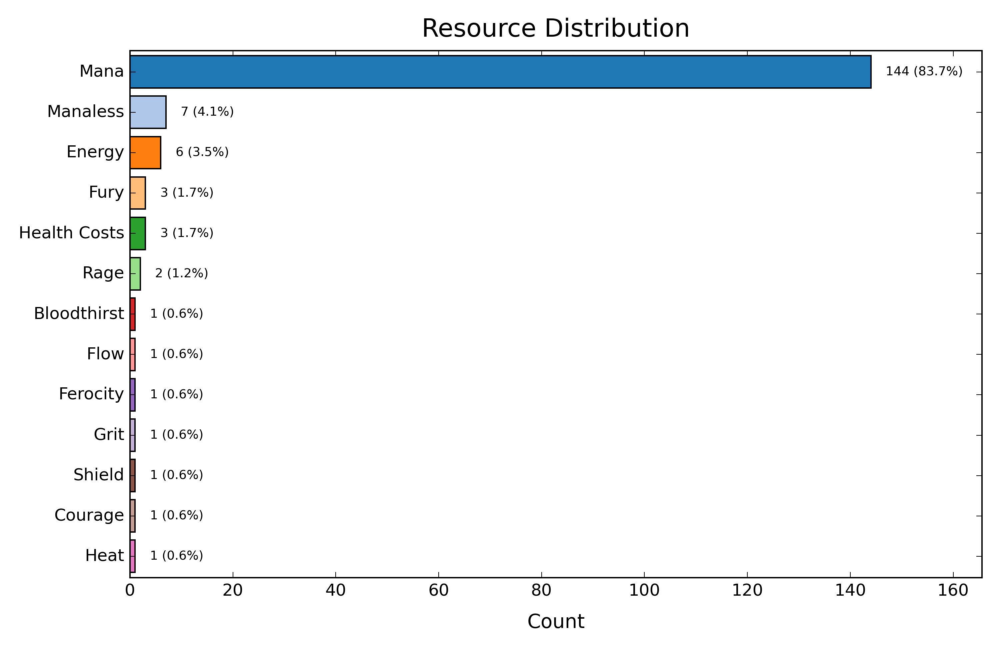
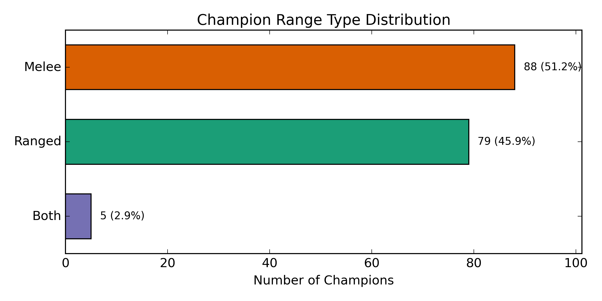
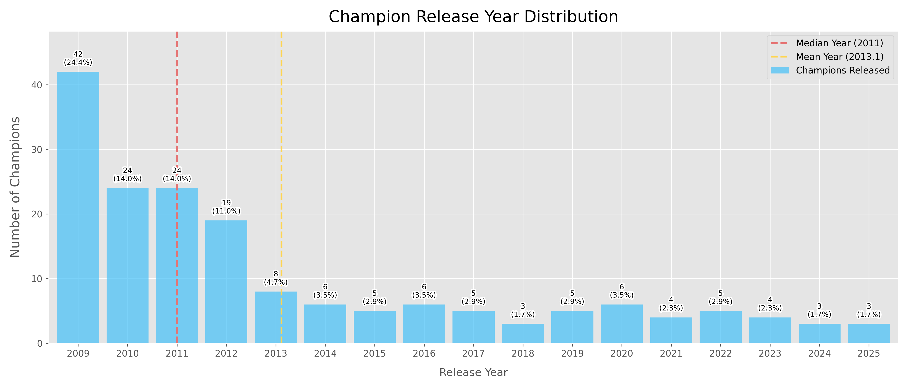
05 / Findings & recommendations
Use the clues to narrow the search systematically.
The solver's decision rule prioritizes information gain for the initial guess, then uses expected remaining candidates to rank choices after feedback. Since LoLdle has infrequent changes to champions' properties, the best initial guess it recommends may change overtime. The solver however always extracts the latest properties and is always up to date.
Recommended use
Keep the feedback categories consistent with the game, refresh the champion dataset as the game changes and use both entropy and expected candidates when evaluating a guess. Entropy describes the potential information in a split, while expected candidates describes the remaining search size.